Documentation
Vous trouverez ici l’ensemble des informations de conception du projet Nova
SOMMAIRE
Contexte
Environ 2 millions de personnes (enfants + adultes) en France seraient touchées par un TDAH. (expliquer ce qu’est un TDAH/demander si quelqu’un connaît celle-ci) le monde d’aujourd'hui Environ 5 à 7 % des enfants sont touchés par le TDAH Cela représente 1 enfant sur 20 environ Parmi les enfants touchés par le TDAH :60 à 80 % ont des difficultés à suivre leur scolarité sans aide particulière. Mais au-delà des chiffres, c’est une réalité difficile à vivre au quotidien, dans la société comme à l’école. Le TDAH n’est pas une maladie en soi,mais une autre façon de fonctionner. Notre objectif d’essayer de les aider à mieux se comprendre, à reprendre confiance en eux, et à s’épanouir pleinement
Persona
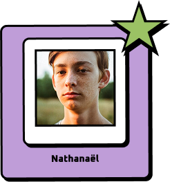
Bio
Un élève de collège avec un TDAH qui n’arrive pas à suivre tous les cours à cause de trop de stimulations, il n’arrive à suivre qu’un cours sur deux. Il perd foi au système éducatif et pense qu’il n’est doué en rien, alors même qu’il adore relever des défis.
Frustrations
- A du mal à se concentrer
- Manque de concentration
- Manque de soutien
- Manque de confiance en soi
Objectifs
- Mieux se concentrer
- Trouver des solutions à son handicap
- Avoir confiance en soi
- Relever des challenges
“ La seule manière que j’ai de me sentir fort c’est de jouer aux jeux-vidéos pour gagner des récompenses et des niveaux “
Comment redonner confiance à Nathanaël envers lui-même malgré son handicap invisible ?
Le concept
Un service numérique type application qui redonne confiance aux éléves souffrant de TDAH en donnant des défis à faire et des tips pour les réussir mais aussi grâce aux commentaires des utilisateurs
User flow
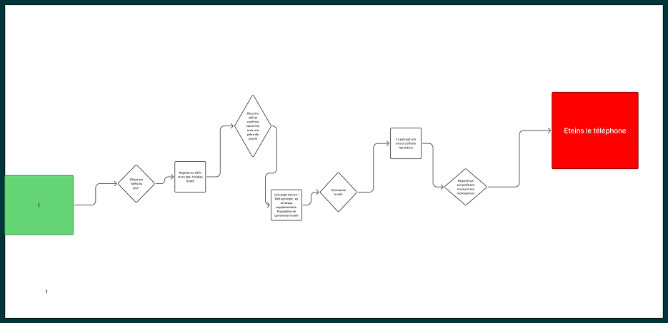
Low fidelity
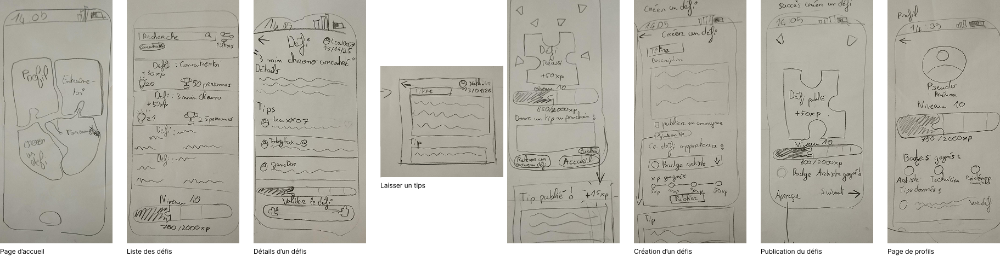
Mid fidelity
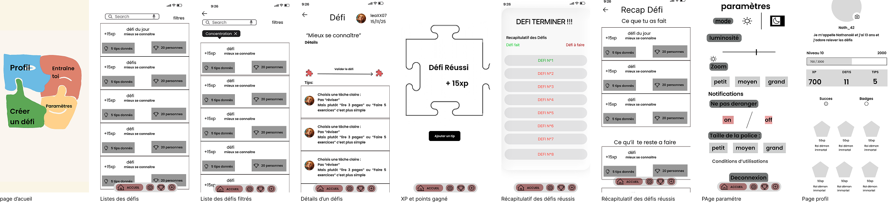
Le prototype
Tests utilisateurs
Avant
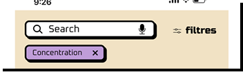
Après
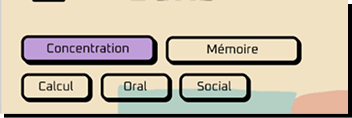
Il y avait à la fois la barre de recherche et les filtres qui compliquait la recherche de défi, donc nous avons uniquement ajouté que des boutons filtres
Avant
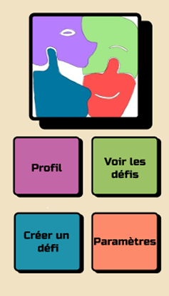
Après
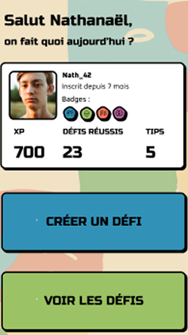
La page d’accueil était flou car il y avait trop de boutons (1 par fonctionnalités de l’app) .On a choisit de valoriser seulement les deux fonctionnalités principales en faisant des gros boutons
Avant
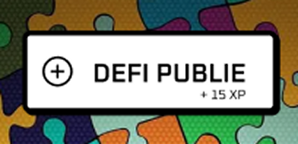
Après
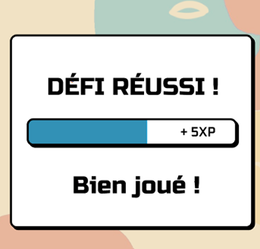
Dans le menu d’accueil , associer les couleurs au logo pour plus de cohérences, le nom des défis. pour renforcer l’identité visuel de l’app
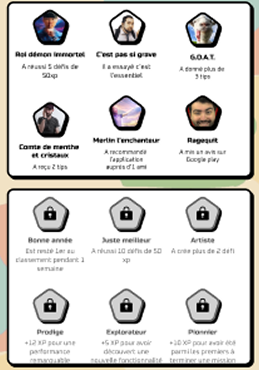
Afficher en grisé les succès qui ne sont pas encore déverrouillés permettrait de mieux visualiser les objectifs à venir et de stimuler la motivation.